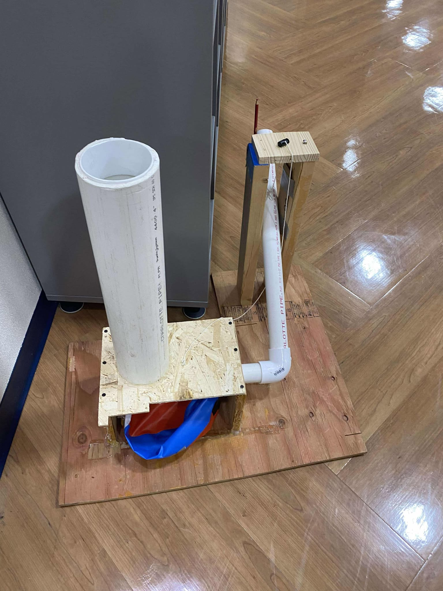

Project 1: Vex Robotics
Robot Description: This video is an example of our testing for our robot to get alliance stakes. We designed polycarbonate hooks that connect to the tank tread with standoffs to hook and basically slam the rings onto stakes (they need to be forced on) after being intake with our floating intake design. The floating intake has a minimum height and can go up to ensure optimal grip on the rings. We went with an 8-wheel (4 omni 4 traction) 6-motor drive to give us maximum pushing power while remaining nimble, as this game is all about getting the rings as fast as you can or preventing your opponents from getting the mobile goals.
Videos of our autonomous run-throughs, testing, and previous designs are in this folder. As our robot is currently undergoing development, some rings fly out. We are in the process of making a redirector that can place rings on the taller wall stakes, which would cover the area above our intake, indirectly solving the ring flying problem and giving us a new method of scoring.
GitHub Code: View the code on GitHub.
PID Control Implementation: We use a Proportional-Integral-Derivative (PID) controller to regulate the robot's movements, utilized in the main.cpp and autons.cpp. This controller calculates the error between the desired setpoint and the current state, applying corrections based on proportional, integral, and derivative terms to minimize this error. This approach ensures smooth and accurate control of the robot's speed and position, adapting dynamically to changing conditions.
Odometry and Inertial Sensor Integration: To make sure the autonomous code is accurate and our PID actually works, we use odometry and inertial sensor data to update x, y, and θ values, tracking the robot's position and orientation during autonomous operation. Odometry calculations use data from wheel encoders to estimate the robot's displacement, while the inertial sensor provides information about its heading and angular velocity. By combining these data sources, the system can accurately determine the robot's pose, enabling precise navigation and maneuvering.
Project 2: Air Trajectory
Project Overview: In our air trajectory build for Science Olympiad, we prioritized creating a robust, efficient, and easily testable design for our first competition. The goal was to launch projectiles with consistent accuracy at close and elevated, far, and bucket shots, while balancing performance and simplicity in construction.
Design Choices:
- Advantages Over Chamberless Designs: The beach ball container offered a simpler alternative to chamberless systems that rely solely on compressing ambient air in the launch tube. This approach reduced the need for precision machining while still achieving comparable results.
- Ease of Testing and Iteration: The beach ball design was faster to build and easier to test, enabling rapid iterations and adjustments during the design phase. Its malleability allowed for flexible adjustments to pressure and volume. This also allowed me to use it to teach new members how the event works much faster.
Performance and Outcomes: The design delivered reliable and repeatable launches, meeting the requirements for trajectory accuracy and consistency. Its user-friendly construction and maintenance also made it ideal for quick troubleshooting and modifications during testing phases.
We were able to get 5th place against other teams based in other states that usually win their state at the Harlem Invitational, with only a 2-inch distance from the center of the targets. We unfortunately weren’t able to make any bucket shots, but as the year goes on we will be working on making these bucket shots consistently obtainable.
Project 3: Robot Tour

Project Overview: The Robot Tour vehicle was designed as a compact, versatile robot capable of navigating through a maze with precision in both time taken and location. The event requires to to reach certain locations at certain time points and end as close as possible to the end point.
Design Choices:
- ESP Microcontroller: The ESP served as the central processing unit, offering efficient wireless communication and control for real-time responsiveness.
- Motor Drivers: Motor drivers were employed to control the four mecanum wheels, allowing us to change the direction they rotate in, basically being what makes our drive work.
- IMU (Inertial Measurement Unit): The IMU enhanced the robot’s capability for precise motion tracking and orientation control, ensuring stability during movement and making sure it moves to the right position.
- Mecanum Wheels: These specialized wheels allowed for side-to-side movement, giving the robot the versatility to move in the 4 cardinal directions without turning. This setup allowed us to focus only on 2 different motions that we needed to control, moving forward and backward, and side to side.
Performance and Outcomes: The robot successfully demonstrated smooth, omnidirectional motion, allowing it to adapt to various navigation scenarios. However, during our competition, a member of our team accidentally moved the groundwire connected to a motor driver, frying it, leaving us with a relatively poor performance compared to the potential we had. Despite this setback, we were still able to get 5th at Harlem.